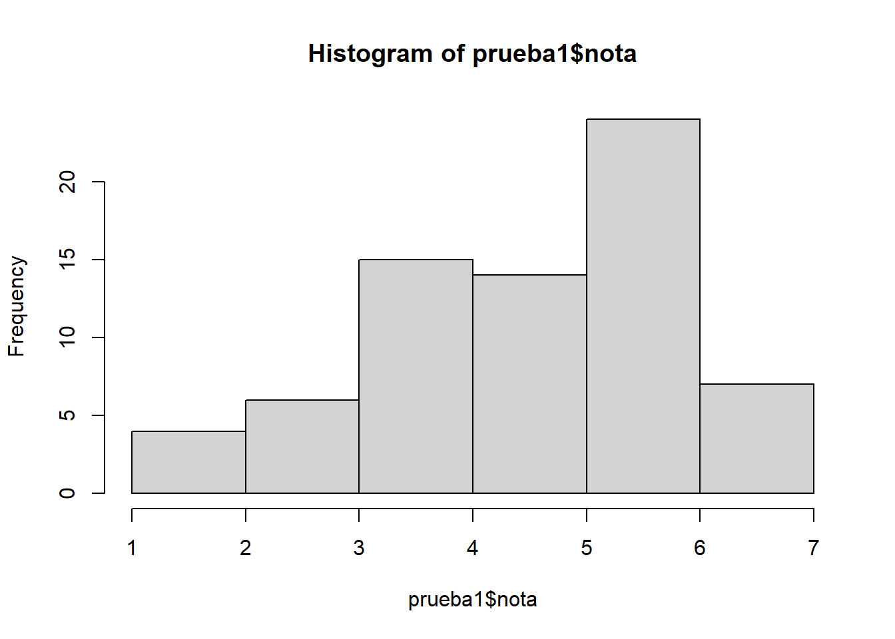
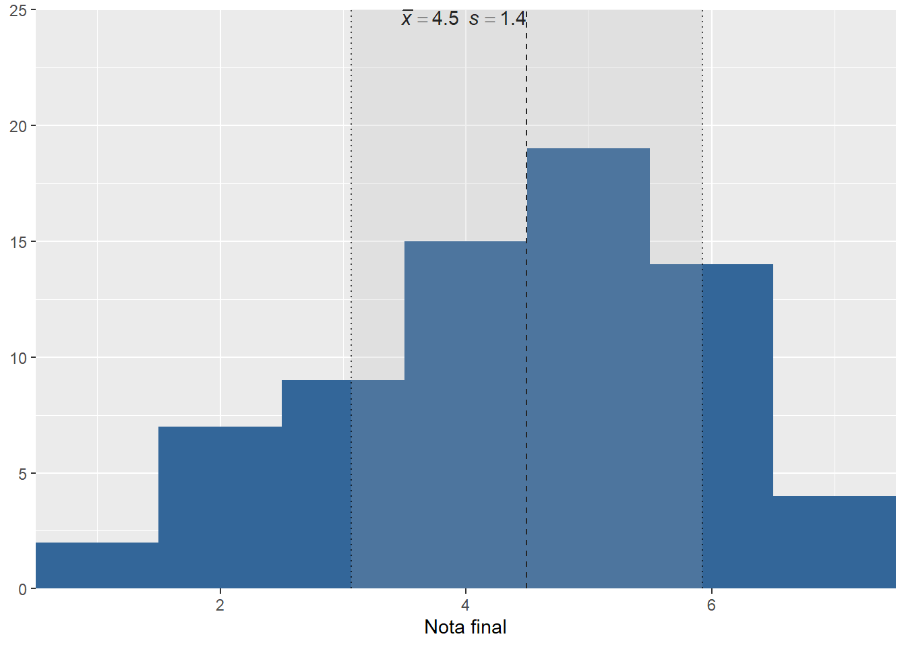
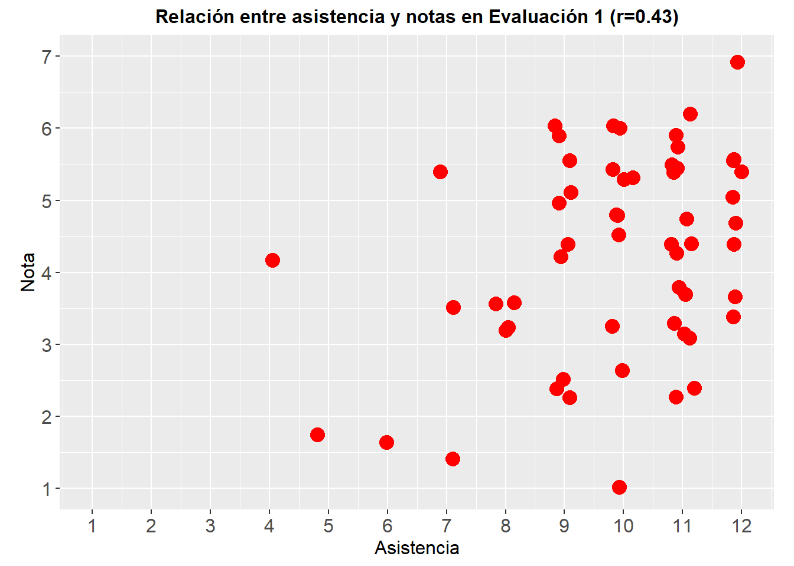

pacman::p_load(tidyverse, sjmisc, sjPlot, kableExtra, sjlabelled, readxl, here)package 'here' successfully unpacked and MD5 sums checked
The downloaded binary packages are in
C:\Users\DELL\AppData\Local\Temp\RtmpSSogJ2\downloaded_packagespacman::p_load(tidyverse, sjmisc, sjPlot, kableExtra, sjlabelled, readxl, here)package 'here' successfully unpacked and MD5 sums checked
The downloaded binary packages are in
C:\Users\DELL\AppData\Local\Temp\RtmpSSogJ2\downloaded_packages [1] "Nº" "Persona" "1a" "1b" "1c"
[6] "2a" "2b" "2c" "Puntos" "Nota"
[11] "Asistida" "Justificada" "asist_total"# Label variables
prueba1$p1a <- set_label(x = prueba1$p1a,
label = "Intervalo de Confianza")
prueba1$p1b <- set_label(x = prueba1$p1b,
label = "Error tipo II")
prueba1$p1c <- set_label(x = prueba1$p1c,
label = "Rechazo H0 valor p")
prueba1$p2a <- set_label(x = prueba1$p2a,
label = "Formulación hipótesis")
prueba1$p2b <- set_label(x = prueba1$p2b,
label = "Contraste de prueba t")
prueba1$p2c <- set_label(x = prueba1$p2c,
label = "Intervalo confianza de prueba t")
prueba1$nota <- set_label(x = prueba1$nota,
label = "Nota final")
prueba1$asistida <- set_label(x = prueba1$asistida,
label = "Asistencia Efectiva")
prueba1$asist_total <- set_label(x = prueba1$asist_total,
label = "Asistencia Registrada")prueba1 %>% descr(., show = c("label","range", "mean", "sd", "n"))%>% kable(.,"markdown", digits=2)| var | label | n | mean | sd | range | |
|---|---|---|---|---|---|---|
| 4 | p1a | Intervalo de Confianza | 70 | 0.55 | 0.30 | 1 (0-1) |
| 5 | p1b | Error tipo II | 70 | 0.31 | 0.45 | 1 (0-1) |
| 6 | p1c | Rechazo H0 valor p | 70 | 0.81 | 0.70 | 2 (0-2) |
| 7 | p2a | Formulación hipótesis | 70 | 1.47 | 0.69 | 2 (0-2) |
| 8 | p2b | Contraste de prueba t | 70 | 2.59 | 1.32 | 4 (0-4) |
| 9 | p2c | Intervalo confianza de prueba t | 70 | 1.26 | 0.74 | 2 (0-2) |
| 3 | nota | Nota final | 70 | 4.50 | 1.43 | 6 (1-7) |
| 2 | asistida | Asistencia Efectiva | 70 | 10.16 | 1.86 | 8 (4-12) |
| 1 | asist_total | Asistencia Registrada | 70 | 10.24 | 1.81 | 8 (4-12) |
hist(prueba1$nota)
plot_frq(data = prueba1$nota,type = "hist",show.mean = T)
prueba1 <- prueba1 %>% mutate(notas_cat=cut(nota, breaks=c(-Inf,4,5,6, Inf), labels=c("Menor a 4.0","4.0-5.0","5.0-6.0","6.0-7.0")))
frq(prueba1$notas_cat, out="browser", show.na = FALSE, title = "Rangos de notas")| val | frq | raw.prc | valid.prc | cum.prc | |
|---|---|---|---|---|---|
| Menor a 4.0 | 25 | 35.71 | 35.71 | 35.71 | |
| 4.0-5.0 | 14 | 20.00 | 20.00 | 55.71 | |
| 5.0-6.0 | 24 | 34.29 | 34.29 | 90.00 | |
| 6.0-7.0 | 7 | 10.00 | 10.00 | 100.00 | |
| total N=70 · valid N=63 · x̄=2.19 · σ=1.04 | |||||
prueba1 <- prueba1 %>% dplyr::select(-notas_cat)tab_corr(prueba1,
triangle = "lower")| Intervalo de Confianza | Error tipo II | Rechazo H0 valor p | Formulación hipótesis | Contraste de prueba t | Intervalo confianza de prueba t | Nota final | Asistencia Efectiva | Asistencia Registrada | |
|---|---|---|---|---|---|---|---|---|---|
| Intervalo de Confianza | |||||||||
| Error tipo II | 0.337** | ||||||||
| Rechazo H0 valor p | 0.271* | 0.399*** | |||||||
| Formulación hipótesis | 0.180 | 0.202 | 0.014 | ||||||
| Contraste de prueba t | 0.243* | 0.244* | 0.214 | 0.485*** | |||||
| Intervalo confianza de prueba t | 0.275* | 0.280* | 0.405*** | 0.281* | 0.590*** | ||||
| Nota final | 0.453*** | 0.525*** | 0.544*** | 0.592*** | 0.849*** | 0.772*** | |||
| Asistencia Efectiva | 0.278* | -0.048 | 0.117 | 0.355** | 0.352** | 0.382** | 0.398*** | ||
| Asistencia Registrada | 0.316** | 0.006 | 0.106 | 0.380** | 0.382** | 0.377** | 0.427*** | 0.980*** | |
| Computed correlation used pearson-method with listwise-deletion. | |||||||||
ggplot(prueba1, aes(x = asist_total, y = nota)) +
geom_jitter(width = 0.2, color = "red", size = 4) +
labs(title = "Relación entre asistencia y notas en Evaluación 1 (r=0.43)") +
labs(x = "Asistencia", y = "Nota") +
theme(axis.title = element_text(size = 12), # Tamaño de las etiquetas de los ejes
axis.text = element_text(size = 12)) + # Tamaño del texto de los ejes
theme(aspect.ratio = 1/1.5) +
theme(plot.title = element_text(size = 12, # Tamaño del título
face = "bold", # Tipo de letra (negrita)
hjust = 0.5)) +
scale_x_continuous(breaks = seq(1, 12, by = 1), limits = c(1, 12)) + # Ajuste del eje de asistencia
scale_y_continuous(breaks = seq(1, 7, by = 1), limits = c(1, 7)) # Ajuste del eje de notas de 1 a 7
prueba1 <- prueba1 %>% mutate(asist_total_cat=cut(asist_total, breaks=c(-Inf,7,8,9,10,11,Inf), labels=c("Menos de 8","8","9","10","11","12")))
frq(prueba1$asist_total_cat, out="browser", show.na = FALSE, title = "Asistencia")| val | frq | raw.prc | valid.prc | cum.prc | |
|---|---|---|---|---|---|
| Menos de 8 | 6 | 8.57 | 8.57 | 8.57 | |
| 8 | 4 | 5.71 | 5.71 | 14.29 | |
| 9 | 10 | 14.29 | 14.29 | 28.57 | |
| 10 | 11 | 15.71 | 15.71 | 44.29 | |
| 11 | 19 | 27.14 | 27.14 | 71.43 | |
| 12 | 20 | 28.57 | 28.57 | 100.00 | |
| total N=70 · valid N=50 · x̄=4.33 · σ=1.58 | |||||
prueba1 %>% # se especifica la base de datos
dplyr::select(asist_total_cat, nota) %>% # se seleccionan las variables
dplyr::group_by(Asistencia=sjlabelled::as_label(asist_total_cat)) %>% # se agrupan por la variable categórica y se usan sus etiquetas con as_label
dplyr::summarise(Obs.=n(),Promedio=round(mean(nota),2),SD=round(sd(nota),2)) %>% # se agregan las operaciones a presentar en la tabla
kable(, format = "markdown") # se genera la tabla| Asistencia | Obs. | Promedio | SD |
|---|---|---|---|
| Menos de 8 | 6 | 2.98 | 1.63 |
| 8 | 4 | 3.40 | 0.20 |
| 9 | 10 | 4.33 | 1.46 |
| 10 | 11 | 4.46 | 1.56 |
| 11 | 19 | 4.62 | 1.44 |
| 12 | 20 | 5.16 | 0.98 |
prueba1 <- prueba1 %>% dplyr::select(-asist_total_cat)Consistencia interna
pacman::p_load(ltm)package 'mvtnorm' successfully unpacked and MD5 sums checked
package 'expm' successfully unpacked and MD5 sums checked
package 'admisc' successfully unpacked and MD5 sums checked
package 'msm' successfully unpacked and MD5 sums checked
package 'polycor' successfully unpacked and MD5 sums checked
package 'ltm' successfully unpacked and MD5 sums checked
The downloaded binary packages are in
C:\Users\DELL\AppData\Local\Temp\RtmpSSogJ2\downloaded_packagespreguntas <- prueba1 %>% dplyr::select(-nota)
cronbach.alpha(na.omit(preguntas))
Cronbach's alpha for the 'na.omit(preguntas)' data-set
Items: 8
Sample units: 70
alpha: 0.753